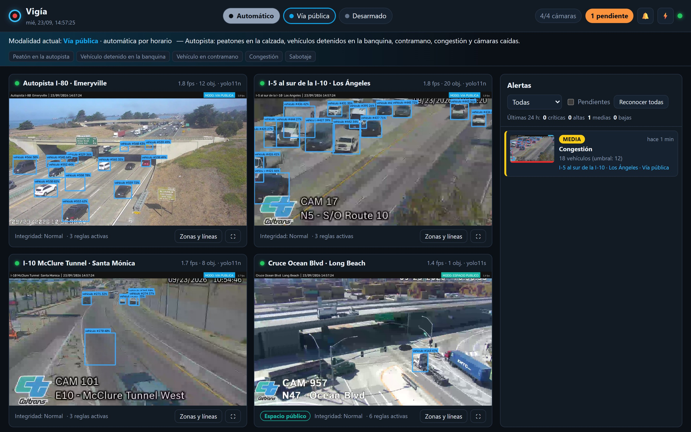
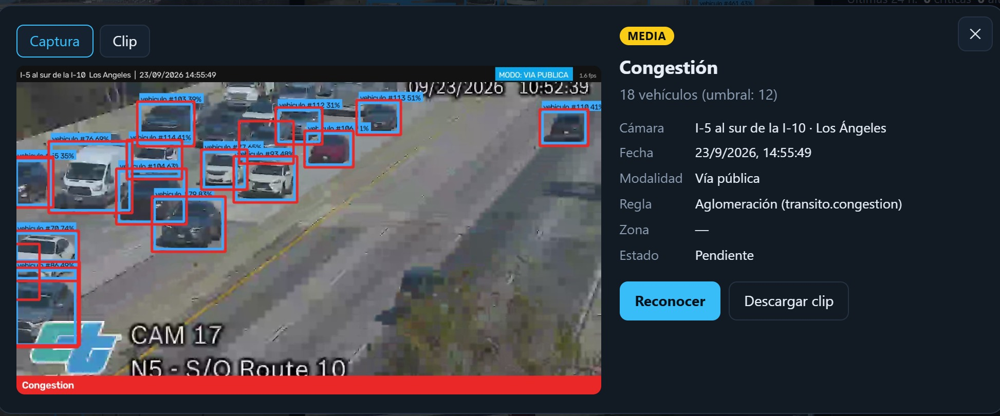
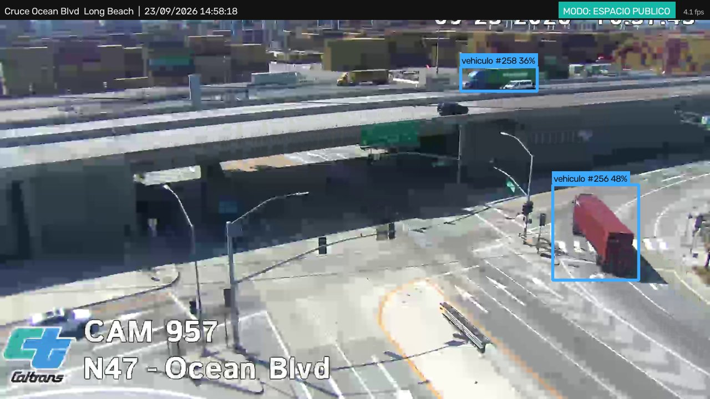

Objetivo, arquitectura y los trade-offs que estamos evaluando, con cámaras de tránsito en vivo de California.

Qué se considera sospechoso depende de la modalidad activa: En casa, Nocturno, Ausente, Comercio o Vía pública.
Si la inferencia es más lenta que la cámara, se descartan cuadros en vez de acumular retraso.


De noche, bajar el umbral de confianza de 0,40 a 0,25 pasó de menos de 1 a 3-4 autos detectados por cuadro. Pero un cartel verde y una baliza empezaron a contarse como vehículos.
Cada cámara ejecuta su propia inferencia y los hilos de PyTorch/OpenMP quedaban en espera activa entre una y otra.